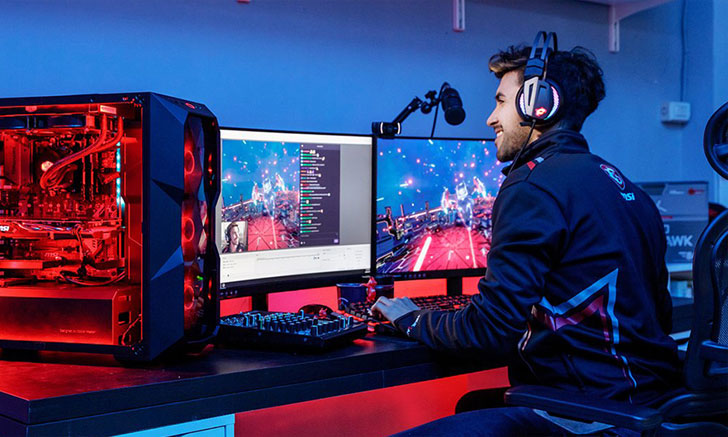
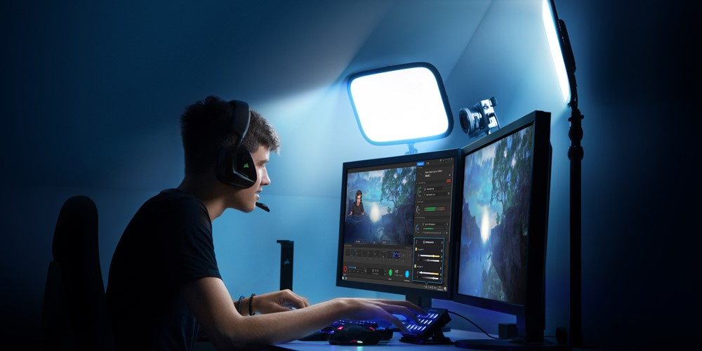

4. สตรีมเมอร์ (Streamer)

สตรีมเมอร์เป็นอีกหนึ่งอาชีพที่กำลังมาแรงในปัจจุบัน เป็นการสตรีมถ่ายทอดสดการเล่นเกม ให้กับผู้ชมในโลกออนไลน์ได้รับชม หรือทำการ Live ผ่านแพลตฟอร์มต่างๆ เช่น Twitch.tv ใครที่มีเอกลักษณ์ และมีบุคลิกการนำเสนอตัวเองให้เป็นที่รู้จักมากเท่าไหร่ โอกาสในการหารายได้ก็จะมีมากขึ้น ซึ่งรายได้จะได้จากการสนับสนุนของผู้ชม หรือเรียกในภาษาคนเล่นเกมว่าการโดเนท และเงินจากแฟนคลับเข้าไปดู ติดตาม จากการกด subscribe
คุณสมบัติของนักสตรีมเมอร์
นักสตรีมเมอร์ที่ดีควรจะต้องมีคาเรคเตอร์ที่โดดเด่น เป็นตัวของตนเองสามารถดึงดูดผู้ชมได้ มีความกล้าแสดงออก อดทน ขยัน มีความคิดสร้างสรรค์ จะต้องเป็นคนช่างสังเกต มีวินัย มีความคิดในเชิงธุรกิจ สามารถสื่อสาร เล่าเรื่องได้อย่างน่าติดตาม มีการทำงานเป็นทีม รักในการเล่นเกมเป็นชีวิตจิตใจ และรู้จักระบบแพลตฟอร์มเก่งต่างๆ เนื่องจากผู้คนที่เข้ามาดู ต้องการรับชมในสิ่งที่ไม่เหมือนใคร ไม่ว่าจะเป็นการทำลายสถิติโลก หรือการเล่นเพื่อความสนุกสนาน รวมถึงการวิเคราะห์ข้อมูล ซึ่งเป็นสิ่งที่นักสตรีมเมอร์ทุกคนต้องมี เพื่อจะได้เข้าใจลูกค้า สามารถเจาะกลุ่มตลาดได้ และต้องมีการนำเสนออย่างสนุกสนาน ให้เกิดการติดตาม

7 อุปกรณ์ที่นักสตรีมเมอร์มืออาชีพต้องมี
1. เครื่องคอมพิวเตอร์ สเปคต้องค่อนข้างสูง ตู้ซีพียู จะอยู่ในระดับกลางๆ Intel Core i5 ขึ้นไป จะได้ทั้งภาพที่สวย บนความละเอียด Detail ที่สูงขึ้น แรมจะ Recommended หรือสเปคควรอยู่ที่ 16GB ขึ้นไป เป็นอย่างน้อย หรือมากกว่านั้นได้ ก็ตามกำลังทรัพย์ของแต่ละบุคคล ค่าใช้จ่าย แรม 16GB ปัจจุบัน เริ่มต้นไม่ถึง 2 พันบาท และหากใช้ 32GB ก็ไม่ถึง 4 พันบาท คิดเป็น 10-15% ของเกมมิ่งพีซีในปัจจุบัน
2. โปรแกรมสำหรับสตรีม โปรแกรมที่ได้รับความนิยมมากที่สุดนั้นก็คือ OBS (ฟรี) และ Xsplit (เสียเงิน) ซึ่งสำหรับคนที่เพิ่งจะเริ่มสตรีมนั้นก็ขอแนะนำว่าให้เริ่มจากการใช้โปรแกรม OBS ก่อน เพราะแค่โปรแกรมนี้ก็มีฟังก์ชั่นที่มากเพียงพอต่อการสตรีมแล้ว
3. การ์ดแคปเจอร์ เพื่อที่จะนำภาพจากเครื่องเล่นเกมไปสตรีมยังบนคอมพิวเตอร์เครื่องอื่น จะสามารถแก้ปัญหาเครื่องเล่นเกมที่จะรับภาระหนักได้
4. กล้องเว็บแคม เป็นอุปกรณ์ที่จะเข้ามาช่วยในการเอ็นเตอร์เทนได้ดีมากๆ เพราะในบางครั้ง การที่มีเพียงแค่เสียงพูดก็อาจจะไม่เพียงพอที่จะทำให้คนดูรู้สึกสนใจ ดังนั้นการใช้กล้องเว็บแคมเพื่อแสดงใบหน้า หรือปฏิกิริยาให้คนดูได้เห็นนั้น นอกจากจะทำให้คนดูไม่เบื่อแล้ว ยังเพิ่มความสนุกให้กับสตรีมของคุณได้อีกด้วย ซึ่งสตรีมเมอร์บางคนก็สามารถทำให้การเปิดกล้องกลายเป็นจุดขายหลักได้เลยทีเดียว
5. ไมโครโฟน เพื่อดึงดูดให้คนดูมาดูมากๆ เพราะการเอ็นเตอร์เทนด้วยการพูดคุยนั้นสามารถที่จะทำให้คนดูสนุก และมีความรู้สึกร่วมไปกับสตรีมเพิ่มมากขึ้น และส่งผลต่อการตัดสินใจของคนดูด้วยว่าจะติดตามดูสตรีมของคุณต่อ หรือจะเลิกสนใจไปเลย
6. เครื่องเล่นเกม หากต้องการจะเป็นสตรีมเมอร์อุปกรณ์ชิ้นแรกที่คุณต้องมีเลยก็คือ “เครื่องเล่นเกม” โดยเครื่องเล่นเกมที่ใช้นั้นก็อาจจะมีความแตกต่างกันไปบ้าง ตามเกมที่แต่ละคนเลือกใช้สตรีม เช่น PC ,PS4 และ Nintendo Switch โดยจะต้องเลือกให้เหมาะสมกับเกม หรือแนวเกมที่จะสตรีมให้มากที่สุด
7. อุปกรณ์เสริม การหาอุปกรณ์เสริมต่างๆ เข้ามาช่วยในการเอ็นเตอร์เทนคนดูนั้นเป็นสิ่งที่ควรทำ เพราะการเล่นเกมแบบเดิมๆ อยู่ตลอดนั้น จะทำให้คนดูรู้สึกเบื่อ อุปกรณ์เสริมที่สตรีมเมอร์หลายๆ เลือกใช้นั้นคือ ฉากเขียวและไฟสตูดิโอ หรืออุปกรณ์เสริม เป็นต้น
นักสตรีมเมอร์บางคน สามารถหาเลี้ยงชีพด้วยการเล่นเกมแบบมืออาชีพ มีหลายๆ คนสามารถหาเงินมาเลี้ยงครอบครัว สร้างรายได้มากกว่าหลายแสนบาทต่อเดือน ยกตัวอย่าง เช่น ผู้เล่นที่ใช้ชื่อว่า TrumpSC เป็นนักสตรีมเมอร์ที่เล่นเกม Hearthstone มีผู้เข้าชมมากกว่า 20,000 คน จากทั่วโลกในแต่ละคืน ส่วนใหญ่แล้วนักสตรีมเมอร์จะแบ่งรายได้หลักออกเป็น 3 ช่องทาง ได้แก่ สตรีมสด ทำช่อง YouTube และรายได้จากผู้สนับสนุน หรือเงินบริจาคจากแฟนๆ จึงไม่แปลกเลยว่าทำไมผู้คนเหล่านี้สามารถทำเงินได้มากกว่า 1 ล้านบาทในแต่ละปี เราต้องคำนึงถึงว่าการสตรีมมิ่งออนไลน์ เป็นอุตสาหกรรมใหม่ที่เติบโตขึ้นในแต่ละวัน หนึ่งในนั้นก็คือ Twitch.tv เป็นเว็บไซต์ที่ใช้แบนด์วิดธ์มากที่สุด เป็นอันดับแปดในอินเทอร์เน็ต ถ้าสตรีมแล้วมีผู้ชมปกติ 2,000 คนต่อวัน เท่ากับว่าจะสามารถสร้างรายได้ 30,000-40,000 บาท ต่อเดือนจากการสตรีม และยังสามารถเพิ่มรายได้มากขึ้นตามเทคนิคในการดึงดูดผู้ชมของนักสตรีมเมอร์ อีกด้วย